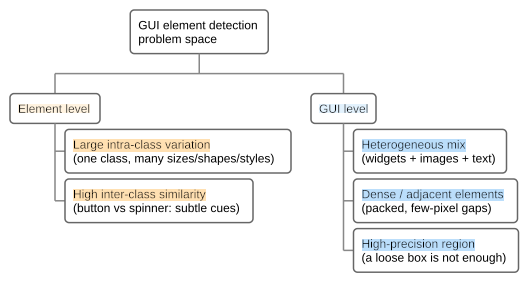
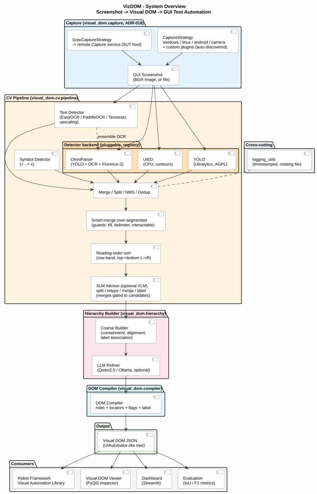
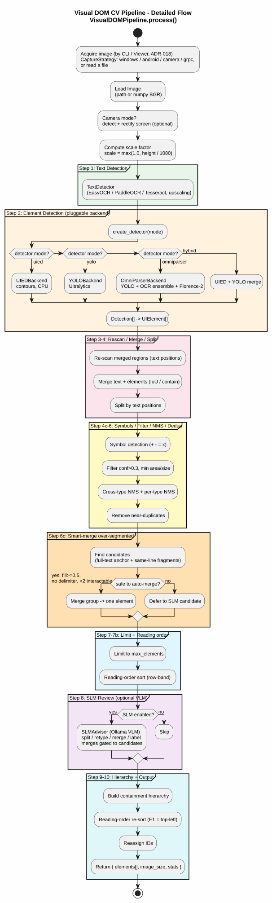
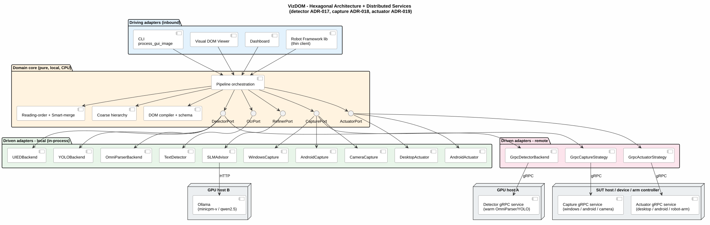

scroll to zoom · drag to pan · double-click to fit · Esc to close
100%
Nguyen Huynh Tri Cuong · Faculty of Information Technology
University of Science, VNU-HCM
Supervisor: Assoc. Prof. Dr. Nguyen Van Vu
Method 3 — applied project: solid engineering with scientific content, not a novel-algorithm thesis. The deliverable is a working, extensible tool; the scientific content lies in the measured comparisons, the documented design decisions, and the reported improvements.
→ next ← back o overview n notes ? help · click any diagram to zoom
GUI test tools (Appium, Selenium, UI Automator) drive an application through its accessibility tree. It is the gold standard — when it exists.
Coordinate scripts and image matching — no element semantics, and they break on any layout, theme, or resolution change.
A human tester looks at the screen and knows what is clickable. If a human can, a machine should be able to — from pixels alone.
button varies in size,
shape, colour, stylingTaxonomy after Xie et al., Object Detection for Graphical User Interface: Old Fashioned or Deep Learning or a Combination? (FSE 2020) — the paper our group studied.

| Methodology | No a11y tree | Custom / camera | Structured tree | Resilient locators | Reusable artifact |
|---|---|---|---|---|---|
| Coordinate / record–replay | Yes | Yes | No | No | partial |
| Image / template match | Yes | Yes | No | No | partial |
| Accessibility tree Appium | No | No | Yes | Yes | Yes |
| VLM grounding, per instruction | Yes | Yes | No | partial | No |
| VizDOM — generated DOM | Yes | Yes | Yes | Yes | Yes |
The idea: synthesise an accessibility-tree-like artifact from pixels, so tree-style testing becomes available on UIs that have no tree.
The price: perception is approximate — the DOM is a best-effort reconstruction, not ground truth. Hence pluggable detectors and per-type reporting.

Screenshot → CV + OCR detection → merge & deduplicate → hierarchy → DOM compilation (roles, flags, labels, locators) → Robot Framework keywords.
Bounds, roles, text, labels, interaction flags (clickable / editable / scrollable), containment hierarchy, and multiple ready-made locators per element — as UI-Automator-like JSON.
4 backends by name:
uied (CPU, no weights), yolo, omniparser (GPU, best on
actionable controls), grpc (remote). OCR: EasyOCR / PaddleOCR / Tesseract.
5 sources:
windows, linux, android (adb),
camera (auto screen rectification), grpc — plus static images and
user plugins.
Click, type, key press, scroll, drag & drop
via desktop / android / grpc / a
robot-arm plugin — all on normalized coordinates, so one test fits every
target.
25 keywords — Connect, Dump Visual DOM, Click Visual, Type Text Visual, Verify Element Value (re-reads the live screen), Visual Should Exist, Wait Until Visual Appears, Get Element Property/Text/Label/Center, …
id= text=
hint= role=, spatial (within, right_of,
below, …) and desc= — plain-language description.
One JSON session config drives every stage;
--init emits an annotated template, --check validates it.
No code change to retune a run.
Run detector / capture / actuator as gRPC services across machines — one warm GPU model serving many clients — with no change to the test.
Interactive Viewer (browse and edit the DOM, export RF resources), an evaluation harness (metrics + reports), dataset generators, and plugins — drop in one file.
Optional: a small LM/VLM review stage (split / retype / merge / label) and session-based output — every run saves screenshot + detections + DOM for later inspection. Two deliverables: the engine, and the Robot Framework library that consumes it.
Every stage threshold is resolution-aware (defined at 1080p, scaled up) and driven by one JSON session config.

| System | Paradigm | Output granularity | GPU | Base / size | License |
|---|---|---|---|---|---|
| VizDOM (ours) | parser (CV + SLM) | hierarchical DOM tree | No* | composed pipeline | per backend |
| UIED | classical CV | flat elements | No | — | research |
| OmniParser V2 | detector + caption | flat labelled boxes + interactability | Yes | YOLOv8 + Florence-2 | AGPL-3.0 / MIT |
| Aria-UI | vision grounding | single point | Yes | Aria MoE, 3.9B act. | n/v |
| ELAM-7B | grounding + eval | point + PASSED/FAILED | Yes | Molmo-7B-D | Apache-2.0 |
| Jedi-3B/7B | vision grounding | single point | Yes | 3B / 7B | n/v |
Parsers enumerate elements. Grounders return one point per natural-language instruction. Only parsers can produce a complete tree.
None of them builds a hierarchy — that is where the contribution sits.
*UIED backend is CPU-only; the OmniParser backend uses a GPU. Author-reported figures; different benchmarks — not pooled.
A grounder answers one instruction at a time: every click and every assertion is a fresh large-model inference. A parser pays perception once per screen state, then every lookup is an in-memory query.
| Test with 5 screens, 40 steps | Model calls | Per-lookup cost |
|---|---|---|
| VizDOM (parse once per screen) | 5 | in-memory (~0 ms) |
| Grounder (per instruction) | 40 | one GPU inference |
Cost scales with screen states, not with test steps. Measured on our warm detector service: model load happens once (~14–32 s), then inference is 0.6 s warm (2.5 s cold) and a second pipeline construction in the same process costs 0.00 s (model cache). Grounder wall-clock is not measured here — but 3.9–7B activated parameters are GPU-bound by construction, per call.
Reuse economics: one parse serves many locators and assertions — the artifact is reused, the inference is not repeated.
within=Form — a coordinate answers none of these.Also: their published scores (ScreenSpot, OSWorld) measure a different task — instruction grounding, not element enumeration. They cannot be pooled with detection F1.
Not either/or — we use grounding where it pays. The desc= locator's
Tier 2 is a VLM grounder, invoked only for the long tail that deterministic tiers
cannot resolve, and snapped back onto a DOM element via Set-of-Mark. Roadmap: plug a dedicated
grounder (Aria-UI / ELAM class) in as an alternative Tier-2 backend behind the same interface.
Parse once for structure; ground only what is left.
Edge/contour aggregation, template matching. Training-free, interpretable, tight boxes — weak on artificial widgets and images.
Anchor-based (Faster R-CNN, YOLO) and anchor-free (CenterNet). Better coverage; bounding-box precision limited by feature-map regression.
Classical region proposal for accurate non-text boxes + deep models for text and semantics. The UIED finding — and our architecture.
A pure core depends only on abstract ports:
DetectorPort — UIED / YOLO / OmniParser / gRPCOcrPort · RefinerPortCapturePort — windows / linux / android / camera / gRPCActuatorPort — desktop / android / gRPC / robot armA user adds a backend by dropping one file into plugins/;
the registry loads it and it is selectable by name from configuration —
no core changes.
Chosen for testability (core runs with no I/O) and substitutability — the project's primary quality goal. ADR-015 / 017 / 018 / 019.

Method: SWA / arc42 — drivers → solution → documentation → verification. Every significant choice traces to a ranked driver.
| Rank | Driver | Specific interpretation |
|---|---|---|
| #1 | Modifiability | new detector / capture / actuator with no core changes |
| #2 | Deployability | ports runnable in-process or remote by config |
| #3 | Testability | full runs with no GPU, no network |
| #4 | Accuracy | detection F1 / IoU on real UIs |
| #5 | Performance | warm-model reuse; per-request latency |
| — | Offline operation | constraint: proxy blocks public hosts → vendoring, offline docs |
| — | No containers | constraint: distribute without Docker / orchestrators |
This is a greenfield applied project whose stated purpose is extensibility across detectors and devices — so modifiability and deployability rank above raw accuracy. Were VizDOM a fixed single-platform product, accuracy and reliability would rank first.
Accuracy vs Testability. The most accurate detector (OmniParser) needs a GPU and ~1 GB of weights — conflicting with "runs on a laptop".
→ Resolved by making the detector a port: a CPU baseline (UIED) for laptops, plus a remote GPU service when accuracy matters.
Deployability vs Simplicity. gRPC services add moving parts to every run.
→ Resolved by making gRPC optional: in-process is the default, so the simple case pays nothing.
Both conflicts are resolved by the same mechanism — the port abstraction — which is why one pattern is applied to all three driven ports.
How should detection / capture / actuation be made extensible and deployable? Three alternatives, scored 1–5 against criteria weighted from the ranked drivers:
| Criterion | Weight | A · hard-coded per consumer | B · shared library, in-process only | C · strategy + registry + optional gRPC |
|---|---|---|---|---|
| Modifiability | 5 | 1 (5) | 4 (20) | 5 (25) |
| Deployability | 5 | 1 (5) | 2 (10) | 5 (25) |
| Testability | 4 | 2 (8) | 4 (16) | 5 (20) |
| Complexity lower better | 3 | 4 (12) | 4 (12) | 2 (6) |
| Operational complexity lower better | 3 | 5 (15) | 4 (12) | 2 (6) |
| Weighted total | 45 | 70 | 82 |
Scoring. Each cell = raw score 1–5, with (weighted contribution) in parentheses; total = Σ weight × score. Weights derive from driver rank (5 = top driver). For the two "lower is better" criteria a high raw score means low complexity.
Outcome: Option C. It wins decisively on the two top drivers, at the explicitly accepted cost of higher intrinsic and operational complexity — mitigated by keeping gRPC optional (Option B's behaviour is the default local mode) and by sharing one registry pattern across all three ports. Recorded in ADR-015 / 017 / 018 / 019.
Each port is a first-class service boundary — a versioned protobuf contract plus a standalone gRPC server:
| Service | Port | Runs where |
|---|---|---|
| Detector | 50051 | GPU host — one warm model, many clients |
| Capture | 50053 | the device under test |
| Actuator | 50054 | the SUT / a robot-arm controller |
Coordinates on the wire are normalized [0,1] + image size, so the protocol is resolution-independent; each strategy maps to its own device space (a robot arm applies a calibration homography).
But in-process is the default. gRPC is a transport, not a requirement — the same services collapse into one process when co-location suffices, so we avoid the operational tax on the common case.
Detector & OCR choice, merge/dedup thresholds, hierarchy, symbols,
filters, capture, grounding — all in one validated file
(--init emits an annotated template, --check validates).
session = connect("vizdom.config.json")
dom = session.analyze("screen.png")
Connect vizdom.config.json
Dump Visual DOM
Click Visual text=Login
id= text= hint= role=within= right_of= below=desc= — natural language newActions resolve a locator → element → normalized centre → actuator, so the same test runs locally, over gRPC, or against a robot arm unchanged.
Models load once per session and are reused across screenshots — a suite pays the model-load cost a single time.
examples/windows_calculator_demo/ — start the detector
service, then robot calculator_demo.robot drives Windows Calculator by its Visual DOM.Each quality goal is written as a measurable scenario (stimulus → response → response measure), then verified. Vague goals like "should be modular" are not verifiable; these are.
| ID | Quality | Response measure (the acceptance test) | Status |
|---|---|---|---|
| Q-01 | Modifiability | 1 new file + 1 registry line, 0 core edits; ≥2 implementations per port | Verified — 4 detectors, 5 captures, 3 actuators |
| Q-02 | Deployability | Config-only change (strategy name + host:port), 0 code changes; end-to-end round-trip succeeds | Verified — capture pixel-identical, actuator mapping exact |
| Q-03 | Performance | Model load count = 1 per service lifetime; later requests pay inference only | Verified functionally |
| Q-04 | Testability | Full pipeline + RF keywords complete with zero GPU / network | Verified |
| Q-05 | Accuracy | Target F1 ≥ 0.80, mIoU ≥ 0.60 on a labelled benchmark | Measured: mIoU 0.68 met; F1 0.58 not met |
Four of five verified. The architectural goals — the ones this project is about — hold with concrete evidence, not assertions.
Accuracy is the open one. Aggregate F1 misses the target; per-type recall on actionable controls (0.83 IoU / 0.97 center-hit) is the testing-relevant result. Logged as a risk, not glossed over.
Also logged as risks: ADR-017 is still Proposed while deployability evidence leans on it, and gRPC channels are insecure (LAN/trusted only).
Greedy matching by IoU at 0.5, pooled over all elements. Computed by the
project's own harness (visual_dom.evaluation).
Only the clean synthetic split is scored. The other layers are development / robustness aids.
| Detector | P | R | F1 | mIoU | Char acc |
|---|---|---|---|---|---|
| UIED CPU | 0.39 | 0.71 | 0.51 | 0.68 | 0.92 |
| OmniParser | 0.56 | 0.59 | 0.58 | 0.67 | 0.95 |
Aggregates are dominated by text (63% of ground-truth elements), so per-type recall is the testing-relevant measure. Two lenses: strict IoU≥0.5 and center-hit (is it click-targetable?).
Metrics. All scores are unitless proportions in [0, 1], higher = better. P = precision, R = recall, F1 = their harmonic mean, computed by greedy box matching at IoU ≥ 0.5, pooled over all elements. mIoU = mean intersection-over-union of matched boxes. Char acc = character-level OCR accuracy (1 − CER).
| Type | UIED | OmniParser |
|---|---|---|
| button | 0.82 / 0.96 | 1.00 / 1.00 |
| input_field | 0.95 / 0.99 | 0.99 / 0.99 |
| icon | 0.08 / 0.28 | 0.67 / 1.00 |
| checkbox | 0.68 / 0.82 | 0.20 / 0.87 |
| text | 0.79 / 0.99 | 0.59 / 0.98 |
| actionable | 0.77 / 0.89 | 0.83 / 0.97 |
OmniParser leads on the controls a test drives; UIED on checkbox and text. Its low checkbox IoU (0.20) with high center-hit (0.87) is a box-convention effect — it boxes the check glyph, so the control is still clickable.
Metric. Recall per ground-truth type, two lenses: IoU ≥ 0.5 = a predicted box overlaps the GT box by ≥ 50%; center-hit = a predicted box contains the GT element's centre (click-targetable). GT counts: button 183, input 135, icon 36, checkbox 76, text 1074; actionable = pooled 430.
| Stage | Technique / algorithm | Purpose |
|---|---|---|
| Detection | UIED-style classical coarse-to-fine (binarize → connected components); YOLOv8 icon detection + Florence-2 captioning (OmniParser) | element boxes from pixels, classical or deep — per config |
| OCR | upscaling (~3×) for small text; dual-engine re-OCR of low-confidence reads; OCR ensemble fed into OmniParser (gap-fill) | recover small/faint text the base pass misses |
| Merge & dedup | per-type NMS; cross-type suppression with priority rules; near-duplicate removal; region re-scan; text-position splitting; smart-merge with fill-ratio guard | one clean element per control on dense UIs |
| Role mapping | interactivity + resolution-aware geometry + caption-keyword disambiguation | button / input / checkbox / icon roles from text-or-icon output → 0.09→0.87 |
| Symbol reading | tight-glyph normalisation → hollow-shape rejection → font-template matching (Dice score) with per-symbol thresholds | read + − = × ÷ glyphs OCR cannot → 14/15 |
| Hierarchy | containment thresholding, alignment grouping, label association by distance + position, reading-order sort | the queryable tree — the layer no compared system builds |
| Semantics | text/label channel split; label priority
nearby label > caption > own text |
literal reads never polluted by model predictions |
| SLM / VLM | review actions gated to geometric candidates; desc= tiers: lexical scoring → SLM-over-DOM with id validation → Set-of-Mark visual grounding | small models help, but never free-rein |
| Robustness | thresholds referenced to 1080p and scaled; camera screen rectification (perspective); warm-model caching | same behaviour across resolutions, devices, restarts |
Common thread: deterministic geometry first, models only where semantics are genuinely needed — and always validated or gated. Next three slides: the ones with measured before/after.
Problem. OmniParser tags every detection only text or
icon, so the DOM carried no button / input_field /
checkbox roles — role-based test logic could not use it.
| Type | before | first fix | now |
|---|---|---|---|
| button | 0.00 | 0.91 | 0.89 |
| input_field | 0.00 | 0.99 | 0.99 |
| checkbox | 0.00 | 0.12 | 0.55 |
| icon | 1.00* | 0.00 | 0.89 |
| actionable | 0.09 | 0.73 | 0.87 |
*The original mapping labelled all non-text icon, so icons scored
correct trivially while every other role scored 0.
Metric. Type-classification accuracy = fraction of matched actionable controls (IoU ≥ 0.5) assigned the correct role; proportion in [0, 1]. Measures type only — localisation is unchanged. Same 44-image test set.
Checkbox (0.55) remains weakest — recovered only when the caption is distinctive. Future work.
Problem. Operator keys (+ − = × ÷) read as garbage: OCR fails on
small glyphs, and the rule-based detector (projection profiles over the whole button) failed on
every real calculator key — and false-fired + on the hollow
maximize □, whose edge rows average to a central cross.
÷ × − + = . all correct · title-bar dash
→ - · close → × · maximize correctly rejected ·
digits and icons correctly ignored
Known miss: the Windows ± key draws a diagonal composite no template matches — it
returns nothing rather than something wrong.
Adding a symbol is adding a character to one list — the recognised set is data, not code. Strictness is configurable.
Two captures of the same UI, visually identical, differing only by imperceptible re-encoding noise (≤7/255 per channel, ~90% of pixels), flipped an icon caption from “Maximize” → “Page”.
Deterministic within a run — so it is
input sensitivity, not sampling. The maximize glyph is a bare square □:
genuinely ambiguous to the caption model.
Diagnosed by re-running current code on the old capture: the regression was not in our code. Detector confidence sensitivity (a faint minimize dash falling just under a 0.05 cutoff at a different scale) was a second, separate finding — now a config knob.
| Field | Meaning | Source |
|---|---|---|
text | literal pixel read | OCR / symbol reader |
label | semantic name | nearby label > caption > own text |
A close button now reads text='×', label='Close'; an unreadable glyph
has text=None and keeps its caption as a best-effort label.
Testing guidance: locate text-bearing controls by text=;
icon-only controls by role= + spatial relations. A visual caption is a
hint, not a stable id.
Property locators break exactly where perception is weak. So the tester can state
intent: Click Visual desc="settings button" —
importing the grounder paradigm into the parser system, with the DOM as source of truth.
No model. Token/synonym overlap + role words + positions. Accepts only with a score floor and a margin — ties escalate rather than guess.
Small text LM (temperature 0) picks an id from a compact element table. The id is validated against the DOM — hallucinations rejected.
Candidate boxes are numbered on the screenshot; the model picks a number. Multiple choice beats coordinate regression — and the answer is a DOM element by construction.
5/5 probe descriptions resolved on a real session (paraphrases via the SLM tier); a nonsense description failed loudly with the candidate list.
Finding: a 3B model confidently called a top-left element “top right”. Positional words are therefore enforced geometrically, before any model — position is never delegated.
Determinism is policy: the tier chain is configured (CI can pin lexical-only), results cached per screen, and every hit records which tier answered — making “parse once, ground the long tail” measurable.
Detection is a commoditised layer — an industrial lab converged on the same decomposition. We therefore treat detectors as interchangeable backends and contribute in the layers above.
text/label split, not eliminated.Ask: which of these best serves the thesis — a real-world dataset, or the description-grounding experiment?
Questions & discussion
Docs & report: docs/ · report/ (general + arc42, EN + VI)
Published site: milanac030988.github.io/vizdom
output/sessions/.
→ space next · ← previous
Home / End first / last slide
o overview grid (click a slide to jump)
n presenter notes · f fullscreen
Ctrl+P print / export PDF
scroll zoom at cursor · drag pan
+ / − zoom · 0 fit · 1 actual size
↑↓←→ nudge · double-click refit · Esc close
? or Esc closes this panel